Combiner plusieurs graphiques
Vous savez réaliser des graphiques avec ggplot2 ? Il est très facile de combiner plusieurs graphiques en un seul.
multiplot (JLutils)
Dans son ouvrage Cookbook for R, Winston Chang propose une fonction multiplot pour combiner plusieurs graphiques1
L’extension JLutils disponible sur GitHub propose une version améliorée de cette fonction.
Pour installer JLutils si non disponible sur votre PC, copier/coller le code ci-dessous.
if (!require(devtools)) {
install.packages("devtools")
library(devtools)
}
install_github("larmarange/JLutils")Commençons par créer quelques graphiques avec ggplot2.
library(ggplot2)
p1 <- ggplot(mtcars, aes(wt, mpg)) + geom_point()
p2 <- ggplot(mtcars, aes(factor(cyl))) + geom_bar()
p3 <- ggplot(mtcars, aes(factor(cyl), mpg)) + geom_violin()
p4 <- ggplot(mtcars, aes(factor(cyl), mpg)) + geom_boxplot()Parce que quelques exemples valent mieux qu’un long discours.
library(JLutils)
multiplot(p1, p2, p3, p4)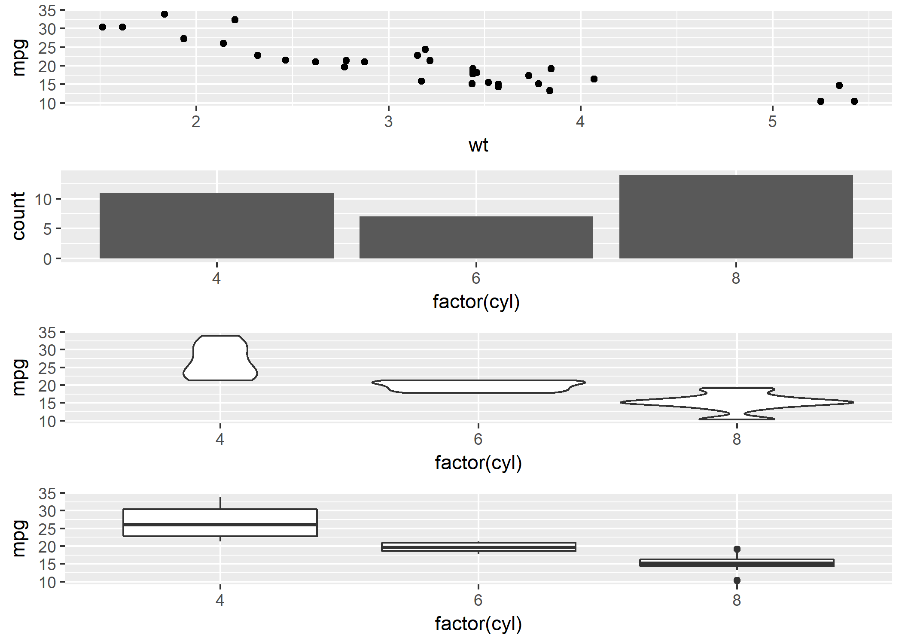
multiplot(p1, p2, p3, p4, cols = 2)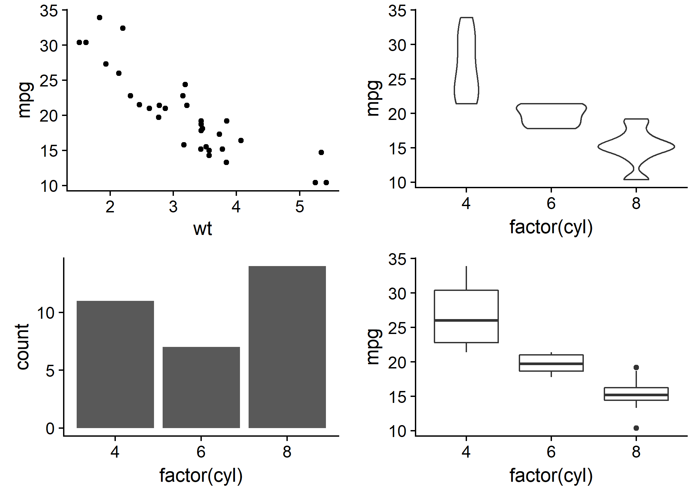
multiplot(p1, p2, p3, layout = matrix(c(1, 2, 3, 3), nrow = 2))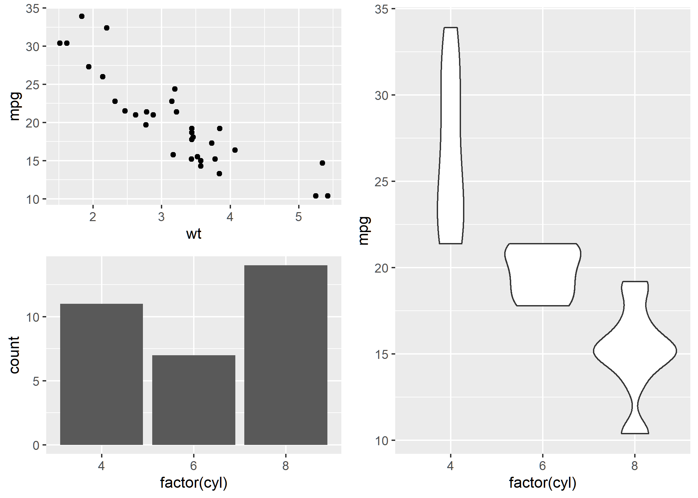
multiplot(p1, p2, p3, layout = matrix(c(1, 2, 3, 3), nrow = 2, byrow = TRUE))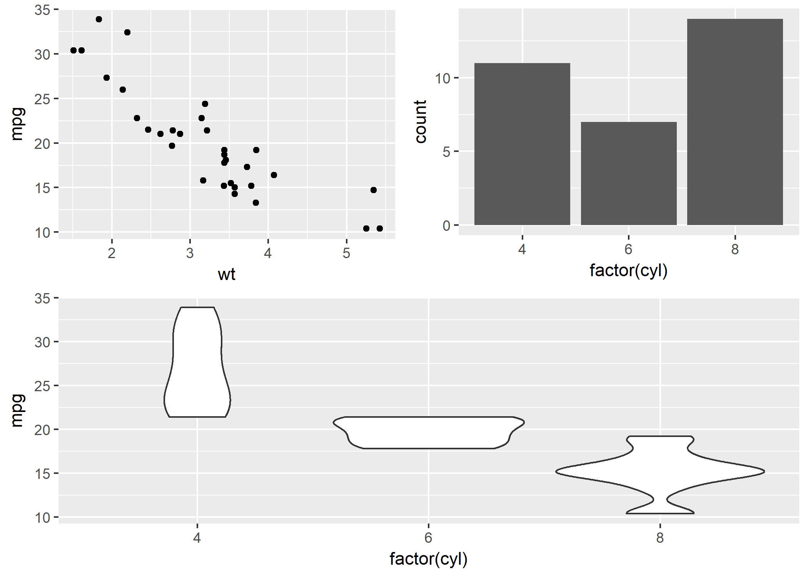
multiplot(p1, p2, p3, layout = matrix(c(1, 2, 3, 3), nrow = 2, byrow = TRUE), heights = c(3,
1))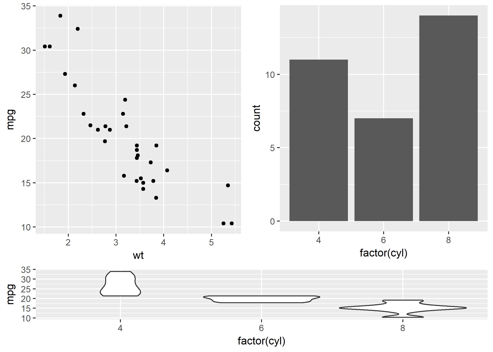
plot_grid (cowplot)
L’extension cowplot propose une fonction équivalente, plot_grid. Son usage est expliqué en détail dans la vignette dédiée inclue avec l’extension : https://cran.r-project.org/web/packages/cowplot/vignettes/plot_grid.html.
library(cowplot)
# simple grid
plot_grid(p1, p2, p3, p4)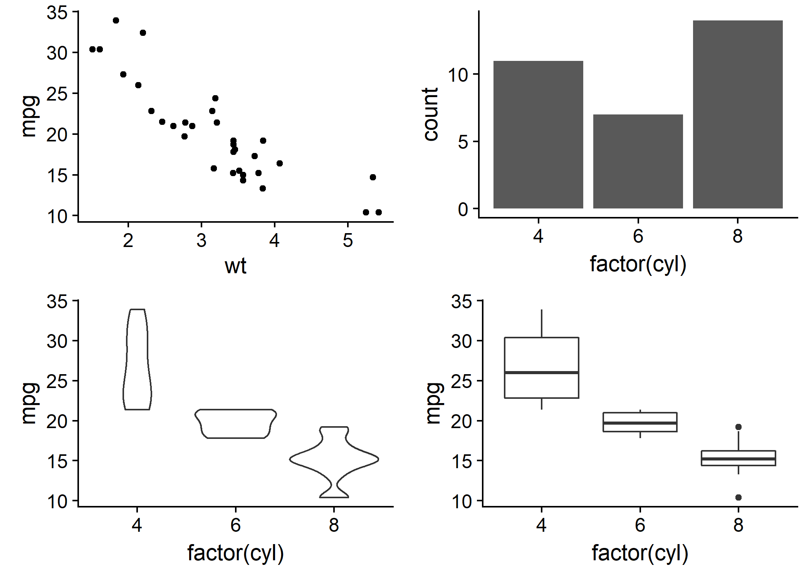
# simple grid with labels and aligned plots
plot_grid(p1, p2, p3, p4, labels = c("A", "B", "C", "D"), align = "hv")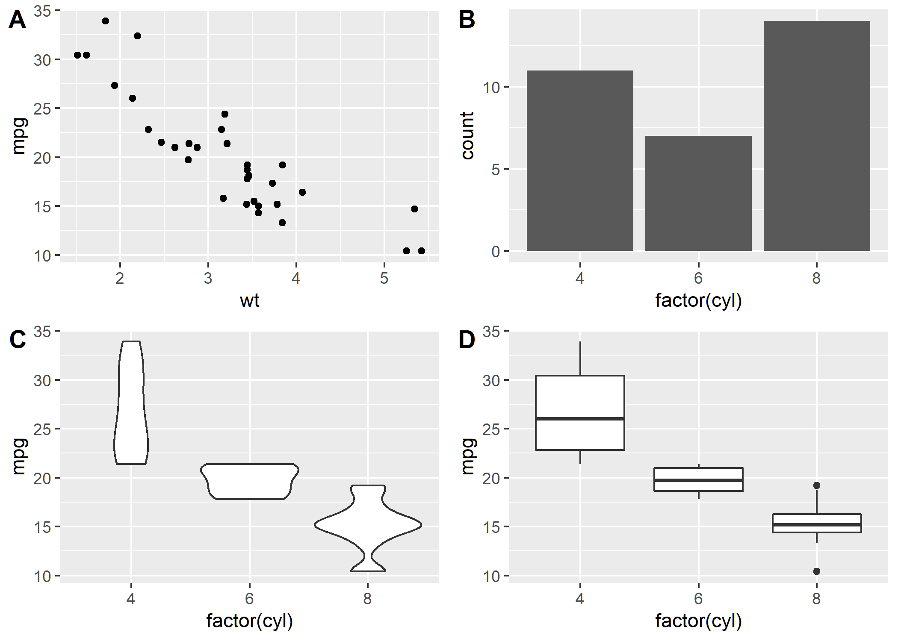
# manually setting the number of rows, auto-generate upper-case labels
plot_grid(p1, p2, p3, nrow = 3, labels = "AUTO", label_size = 12, align = "v")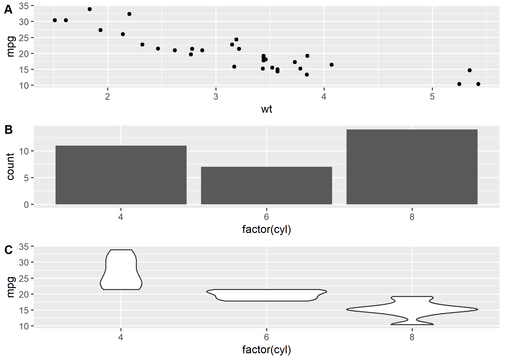
# making rows and columns of different widths/heights
plot_grid(p1, p2, p3, p4, align = "hv", rel_heights = c(2, 1), rel_widths = c(1,
2))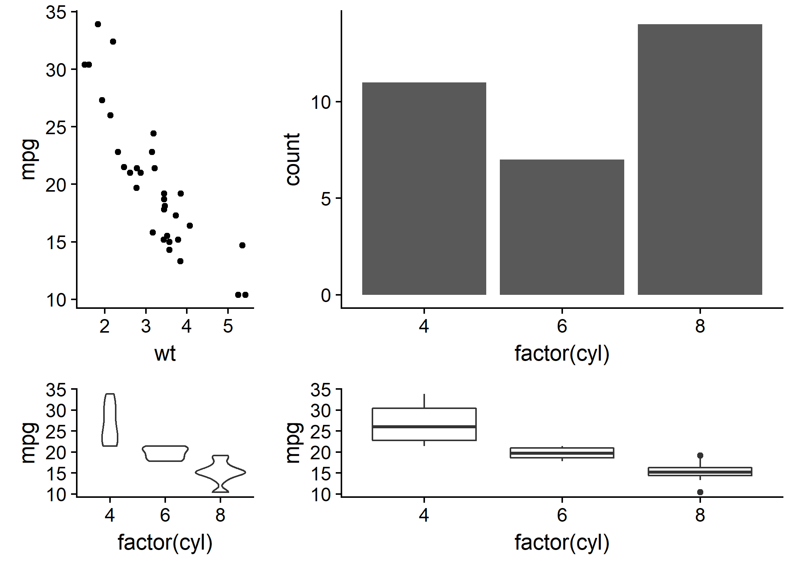
On notera en passant que le chargement de cowplot modifie le style par défaut des graphiques ggplot2. Voir https://cran.r-project.org/web/packages/cowplot/vignettes/introduction.html.
Légende partagée entre plusieurs graphiques
JLutils et cowplot fournissent tous deux une fonction get_legend permettant d’extraire la légende d’un graphique puis de l’utiliser avec multiplot ou plot_grid.
Créons quelques graphiques.
dsamp <- diamonds[sample(nrow(diamonds), 1000), ]
p1 <- qplot(carat, price, data = dsamp, colour = clarity) + theme(plot.margin = unit(c(6,
0, 6, 0), "pt"))
p2 <- qplot(depth, price, data = dsamp, colour = clarity) + theme(plot.margin = unit(c(6,
0, 6, 0), "pt")) + ylab("")
p3 <- qplot(color, price, data = dsamp, colour = clarity) + theme(plot.margin = unit(c(6,
0, 6, 0), "pt")) + ylab("")Récupérons la légende du premier graphique graphique puis supprimons là dans les trois graphiques.
leg <- get_legend(p1)
p1 <- p1 + theme(legend.position = "none")
p2 <- p2 + theme(legend.position = "none")
p3 <- p3 + theme(legend.position = "none")Combinons le tout.
multiplot(p1, p2, p3, leg, cols = 2)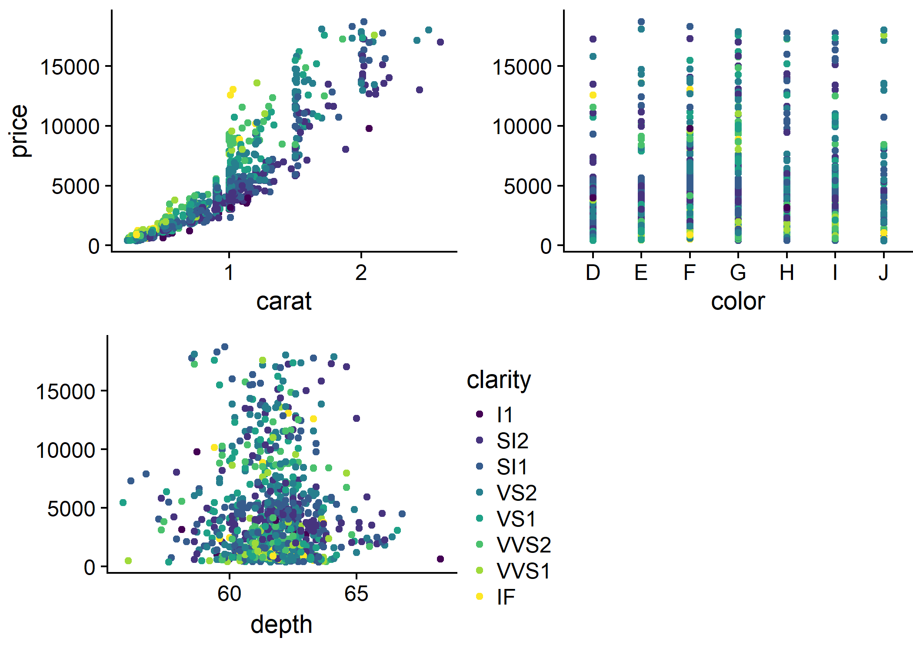
plot_grid(p1, p2, p3, leg, ncol = 2)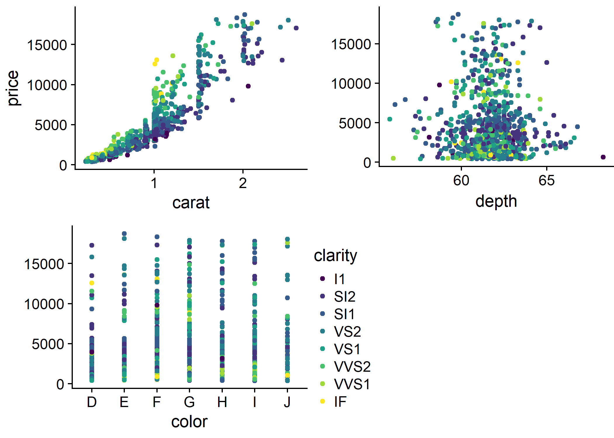